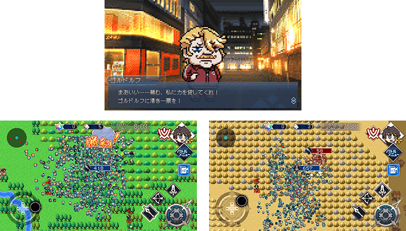

非常感謝您的使用。
這裡是「Fate/Grand Order」營運團隊。
為了記念「Fate/Pixel Wars」自2022年4月1日(五)釋出，舉辦『「Fate/Pixel Wars」釋出記念宣傳活動』。
◆宣傳活動舉辦期間◆
2022年3月31日(四) 23:00～4月2日(六) 22:59
※本頁面皆為開發中圖片。會有與實際圖片相異的情況。
「Fate/Pixel Wars」情報
Fate/Pixel Wars
(App Store、Google Play)
價格:免費(App內無課金)
※iOS版「Fate/Pixel Wars」在App Store的配信開始需要一些時間。尚未配信的情況，敬請稍加等候。

官方網站URL：https://www.fate-go.jp/fate-pw/

下述的期間中進行登入至「Fate/Grand Order」的話，贈送聖晶石10個。
◆領取期間◆
2022年3月31日(四) 23:00～4月2日(六) 22:59
上述期間中，在初次進行登入的時間點，贈送至禮物箱。
※期間內未登入的話無法領取。
※禮物只能領取1次。
◆贈送內容◆
聖晶石 10個
◆贈送對象◆
2022年4月2日(六) 2:59前通過「特異點F 炎上汙染都市 冬木」的御主對象
※上述時間前，在管理室(ターミナル)畫面的關卡橫幅必須要有「CLEAR」的文字顯示。
對一定期間未登入的御主對象，以期間限定舉辦『「Fate/Pixel Wars」釋出記念 回歸連續登入獎勵』。
在下述期間中7天內連續登入的話，贈送聖晶石30個(聖晶石召喚最多11次份)與對從者育成有用的各式各樣道具！
※(聖晶石召喚最多11次份)限在同一個聖晶石召喚進行的情況。
◆舉辦期間◆
2022年3月31日(四) 23:00～4月20日(三) 2:59
※期間內未登入的話無法領取。
◆贈送對象◆
滿足以下所有條件的御主對象
・2022年2月28日(一) 23:00～3月31日(四) 22:59的期間未進行登入
・2022年4月19日(二) 2:59前通過「特異點F 炎上汙染都市 冬木」
※上述時間前，在管理室(ターミナル)畫面的關卡橫幅必須要有「CLEAR」的文字顯示。
【回歸連續登入獎勵合計】 ・聖晶石 30個(聖晶石召喚最多11次份) ・友情點數 合計14,000pt(友情點數召喚70次份) ・睿智的猛火ALL★4(SR) 16張 ・黃金果實 16個
◆回歸連續登入獎勵的內容◆
| 連續登入天數 | 贈送內容 |
|---|---|
| 第1天 |
聖晶石 1個 友情點數 2,000pt 睿智的猛火ALL★4(SR) 10張 黃金果實 1個 |
| 第2天 |
聖晶石 1個 友情點數 2,000pt 睿智的猛火ALL★4(SR) 1張 黃金果實 10個 |
| 第3天 |
聖晶石 2個 友情點數 2,000pt 睿智的猛火ALL★4(SR) 1張 黃金果實 1個 |
| 第4天 |
聖晶石 3個 友情點數 2,000pt 睿智的猛火ALL★4(SR) 1張 黃金果實 1個 |
| 第5天 |
聖晶石 5個 友情點數 2,000pt 睿智的猛火ALL★4(SR) 1張 黃金果實 1個 |
| 第6天 |
聖晶石 8個 友情點數 2,000pt 睿智的猛火ALL★4(SR) 1張 黃金果實 1個 |
| 第7天 |
聖晶石 10個 友情點數 2,000pt 睿智的猛火ALL★4(SR) 1張 黃金果實 1個 |
※第1次的回歸連續登入獎勵會在2022年4月1日(五) 23:00以後配發。 ※之後的的回歸登入獎勵會在每天3:00配發。 ※連續登入天數中斷後，無法領取之後的禮物。 ※最多能領取7次，但根據開始遊戲的時間點，可能無法到此上限。
第1部的主線故事變得更容易推進！
2022年1月，向新手御主及主線故事第1部進行中的御主的各位，實施更容易推進第1部的修改「第1部改善」。
在御主等級較低的從者編成時中COST的上限的調整、在通過主線關卡時可獲得能交換從者育成素材的「純淨稜鏡」等，更容易推進第1部而進行各種修改。
很久沒登入的各位御主，也請在未通過主線故事第1部的情況，因「第1部改善」更容易遊玩而推進第1部！